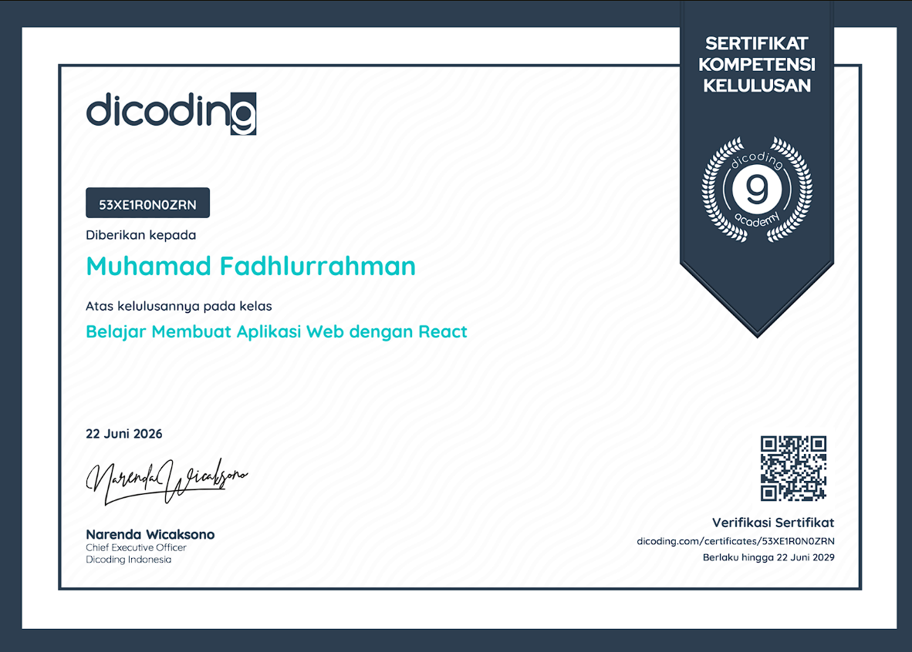
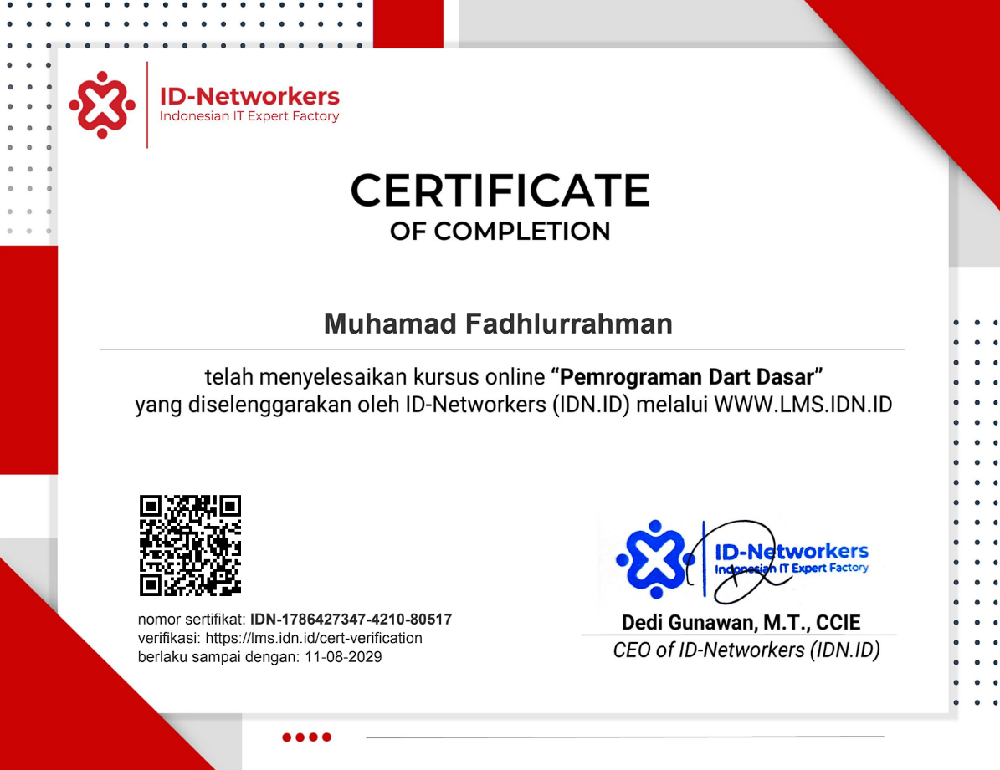
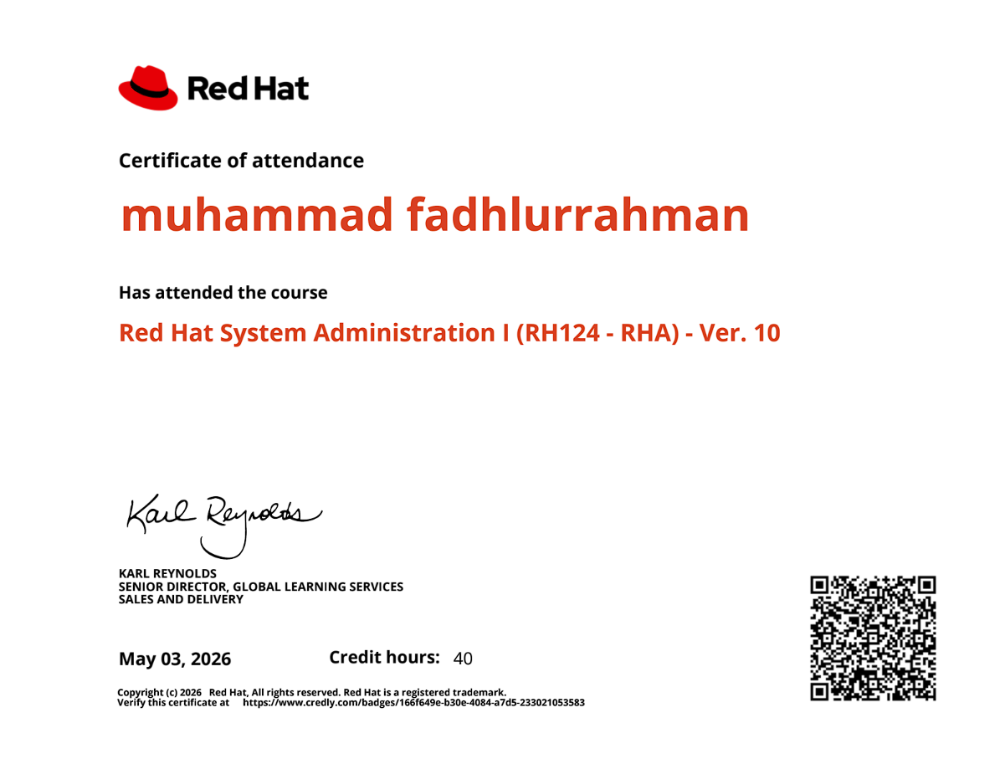
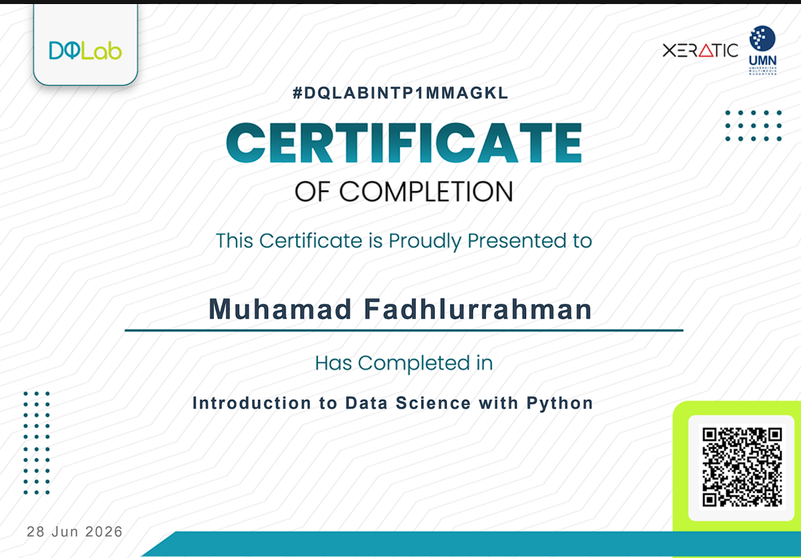
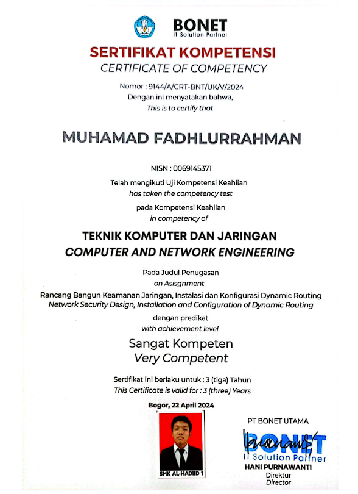
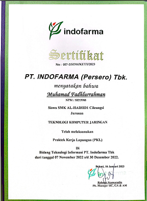
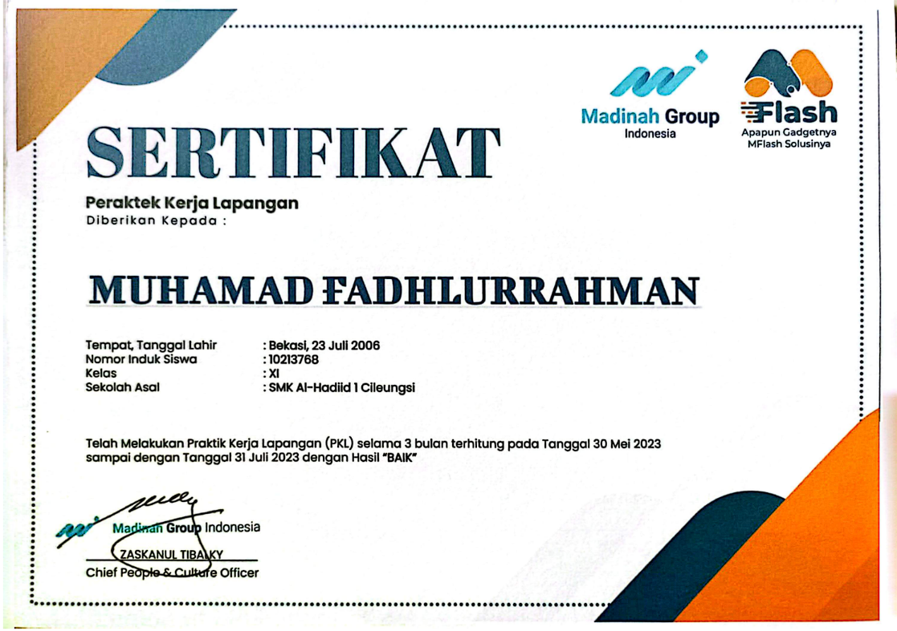
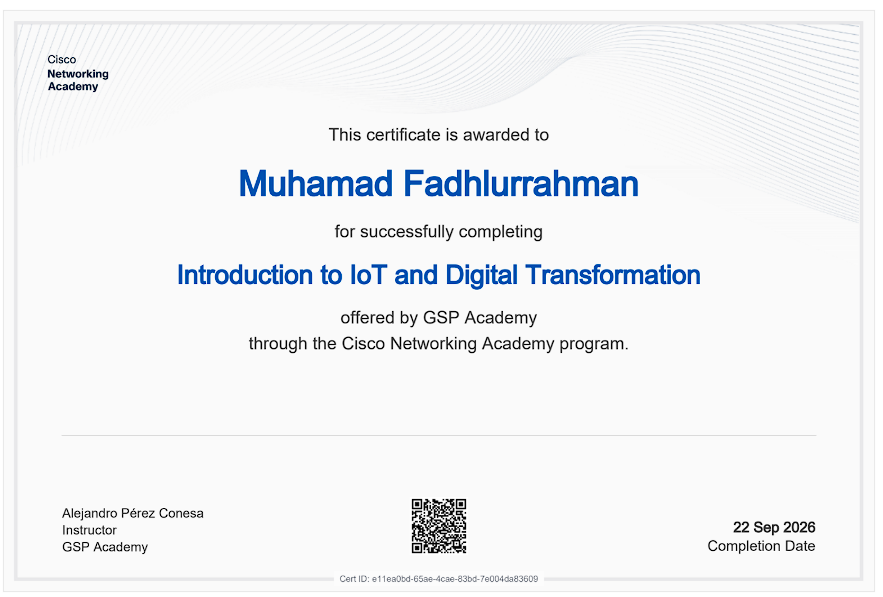
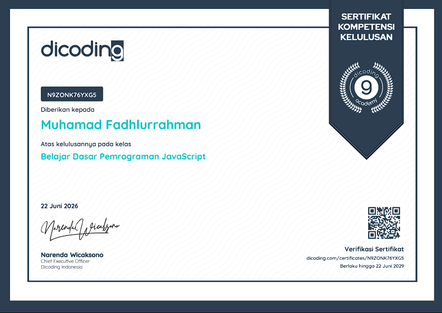
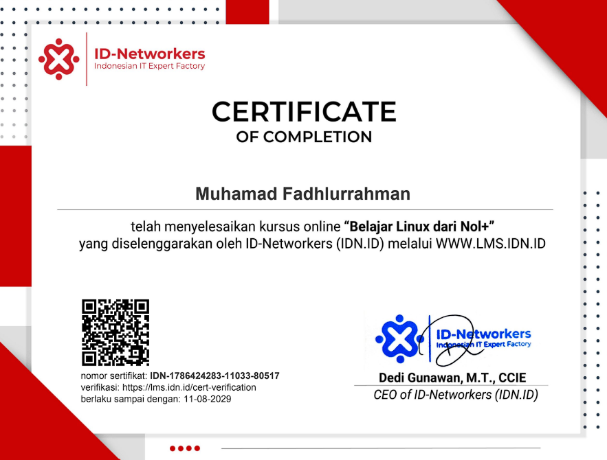

Belajar Membuat Aplikasi Web dengan React
Dicoding · 2026
02 / Credentials
Selected certifications supporting my foundation in software development, data, systems administration, and networking.

Dicoding · 2026

Dicoding · 2026

ID-Networkers · 2026

Red Hat · 2026

DQLab · 2026

BONET · 2024

Cisco Networking Academy · 2026

PT Indofarma Tbk · 2023

Madina Group Indonesia · 2023

Cisco Networking Academy © 2026

Dicoding © 2026

ID-Networkers © 2026